Simulation & Modeling
During my time as an undergraduate student at UC San Diego, I had the opportunity to take a class on Computational Fluid Dynamics. This course provided me with valuable skills: learning the principles behind discretization, developing a CFD solver in MATLAB, running simulations in Ansys Fluent, and learning how professional CFD solvers work. After completing the course, I was given the opportunity to further strengthen my skills with Ansys certifications. In this section, I will summarize my projects and certification skills.
MATLAB CFD Visualization
In my Computational Fluid Dynamics class, I used MATLAB to develop a CFD solver and visualize the results. The first section is simple flow field visualizations for flow around a cylinder at Reynolds Number 100.
This animation shows the horizontal and vertical components of the velocity field around the cylinder over the course of the simulation. Eddies are formed in the wake of the cylinder, creating a von Karman vortex street.
{kind=link}
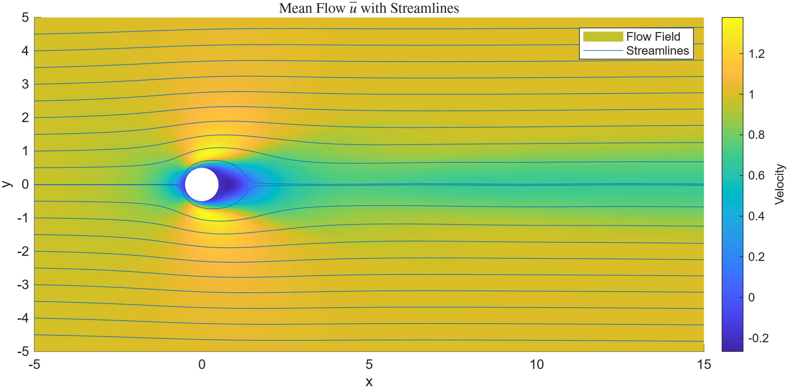
This figure shows the mean flow field of the horizontal velocity component, where the mean is taken over the entire simulation duration at each grid point. Streamlines are added to show the effects of the cylinder on the fluid and stagnation points.
This animation shows the horizontal and vertical components of the velocity fluctuations around the cylinder over the course of the simulation. The fluctuations are defined as the velocity field with the mean at each grid point removed.
{kind=link}
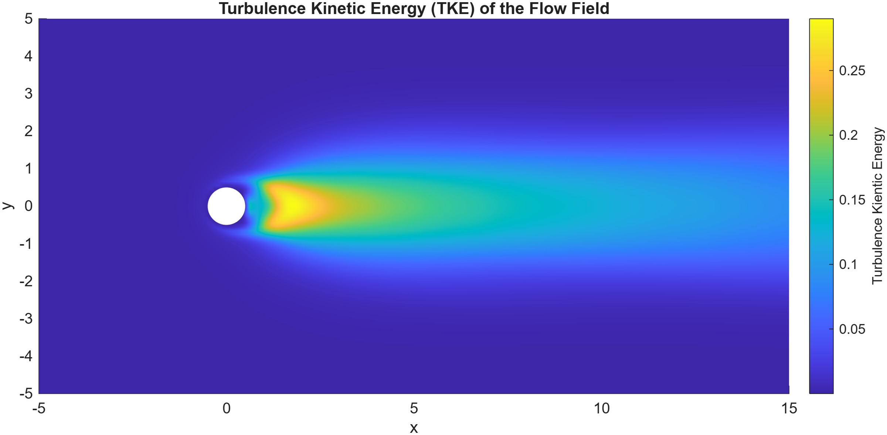
This figure shows the turbulent kinetic energy field around the cylinder over the course of the simulation. Turbulent kinetic energy is a measure of the intensity of turbulence in the flow, and it is found through the velocity fluctuations.
MATLAB CFD: Advection & Diffusion
The next topic is solving the diffusion equation and the advection-diffusion equation. These equations model how tracers in a flow field will naturally diffuse and disperse, or be moved by a mean flow. 1st-order forward and central differencing and periodic boundary conditions were used here.
This animation shows the 2D diffusion equation solution for a tracer initially shaped like the UCSD Triton logo.
This animation shows the 2D advection-diffusion equation solution for a tracer initially shaped like the UCSD Triton logo. The logo is pushed up and to thr right while actively diffusing. Periodic boundary conditions allow the shape to return to the domain when it leaves. First-order backwards differencing was used in this simulation.
This animation shows the 2D solution to the Burgers equation, which is similar to the advection-diffusion equation except it has a nonlinear advection term. This is solved using a predictor-correcter method.
MATLAB CFD Visualization: Energy Equation
Data was provided for a supersonic jet using a Large Eddy Simulation. This visualization shows key variables.
{kind=link}
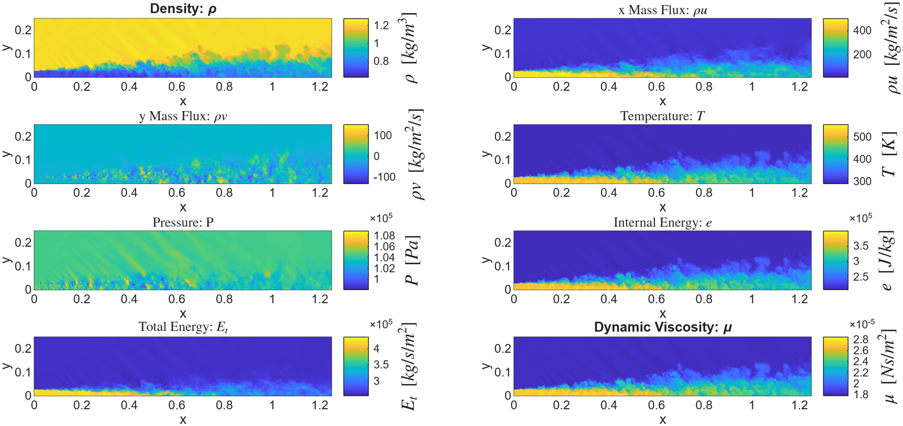
This figure shows several variables for a supersonic jet. The dynamic viscosity was found using Sutherland's law, and conversion between conservative and primitive variables is used.
MATLAB CFD: Mach 4 Flow over a Flat Plate
For this simulation, Mach 4 flow over a flat plate was analyzed. The horizontal length of the plate was 1(10^-5) meters, and the vertical length scale was 8(10^-6) meters. A fixed time step was used to avoid divergence of the solution. Standard pressure, temperature, and parameters for air were used, and the solution was found using MacCormack's Method. MacCormack's Method utilizes a predictor-corrector scheme in space to provide a more accurate simulation.
{kind=link}
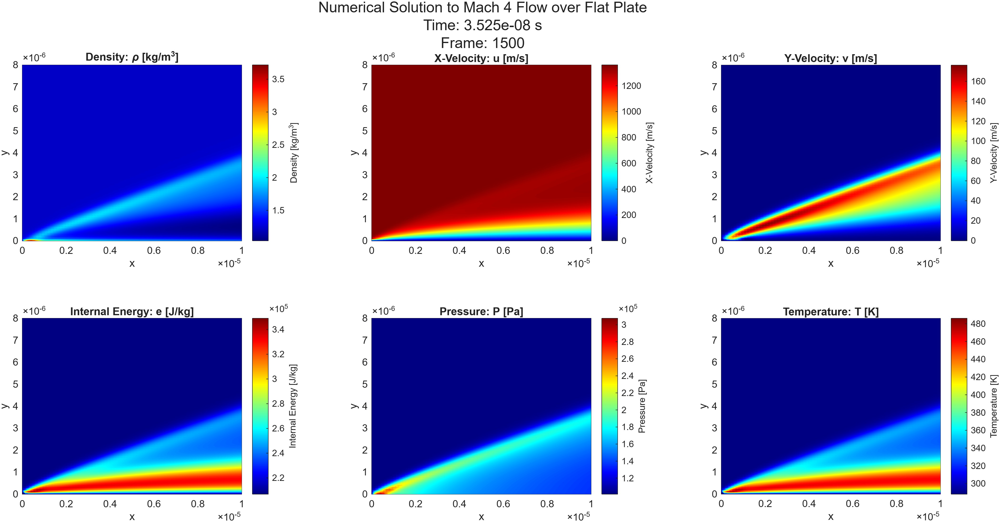
This figure shows final results of the steady-state solution for the Mach 4 flow. A shockwave forms from the leading edge of the plate as seen in the pressure, density, and y-velocity subplots.
{kind=link}
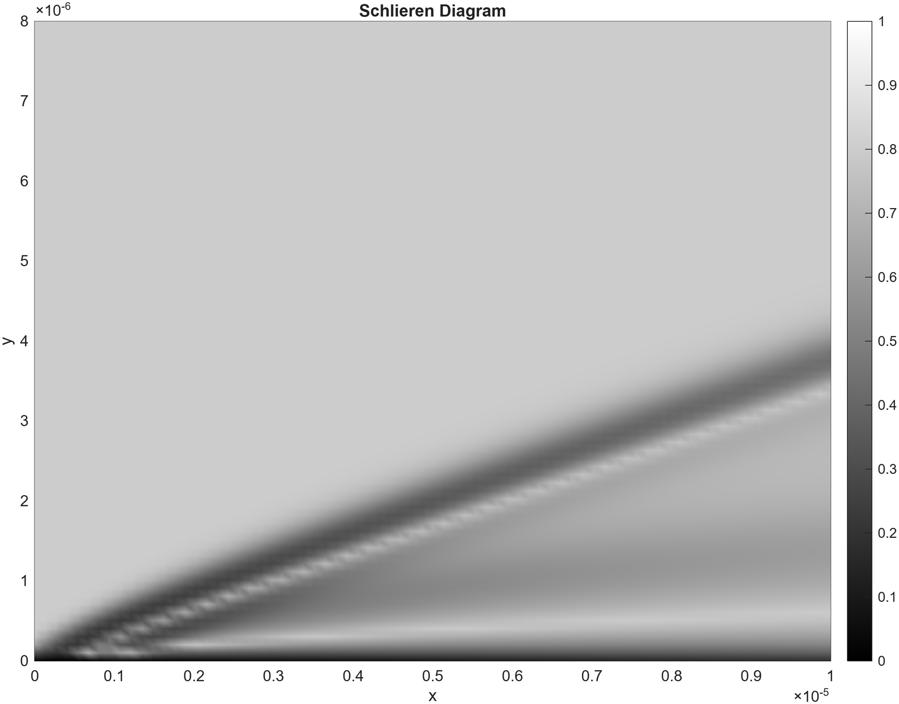
The Schlieren image uses changes in density to show shockwave behavior. It is frequently used in supersonic flow visualizations.
{kind=link}
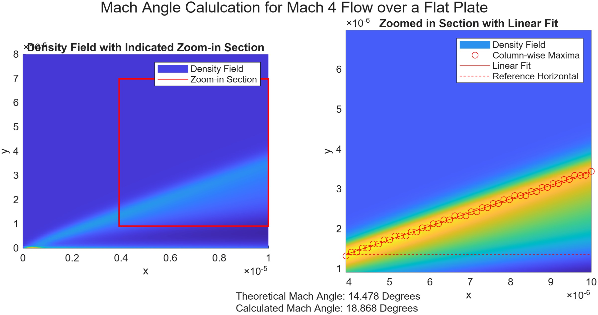
Taking a closer look at the Mach angle can give insight into the accuracy of our simulation. To find the Mach angle, my team member and I found maximum density in each x bin, then fit a slope to the points and calculated the angle. The angle is ~4 degrees off of what theory predicts, this is likely due to MacCormack's method not being robust enough to simulate the flow.
{kind=link}
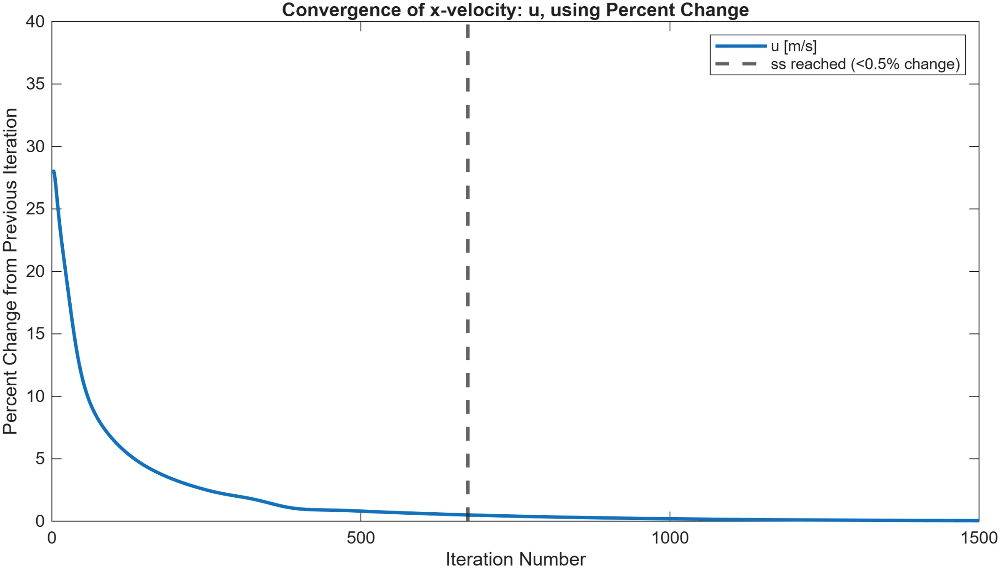
Convergence of the Mach 4 flow was set by a percent change threshold. The norm of the x-velocity was found at each time step, and once the percent change between subsequent time steps went below 0.5%, the simulation was converged.
Ansys Fluent: Particle Tracking Setup
The final project in my CFD course involved simulating particle tracking using Ansys Fluent. The COVID-19 pandemic introduced unique safety concerns for close contact in-person class settings at universities around the world. In this study, the spreading of COVID-19 tracer particles will be simulated in a small classroom with some ventilation. Parameter studies involving varying the ventilation inlet flow rate, the number of outlets (“opening doors”, etc.), and varying rates of breathing were tested for changes in virus concentration.
The main questions considered in these studies include:
- How do increased ventilation rates change virus spreading?
- Does opening doors help with virus removal in a room?
- How does virus spreading change over time under different ventilation schemes?
The main parameters being tracked was the air changes per hour (ACH), which measured how quickly the volume of air in the room was fully refreshed, how many COVID particles were removed from the room, and the volume integral of the floating particles. Particle tracking and concentration plots were also made.
The geometry of the classroom originally started as a 15 foot by 12.83 foot floor with 9 foot tall ceilings and a ventilation inlet and outlet that are both one foot in diameter. Students, desks, a teaching podium, and a door were added to the model.
{kind=link}
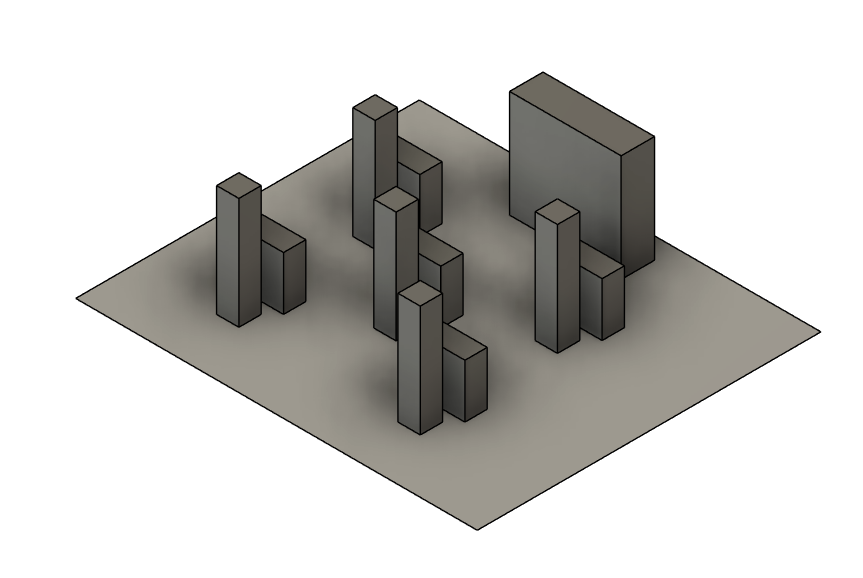
Model of the inside of the classroom containing students and desks.
{kind=link}
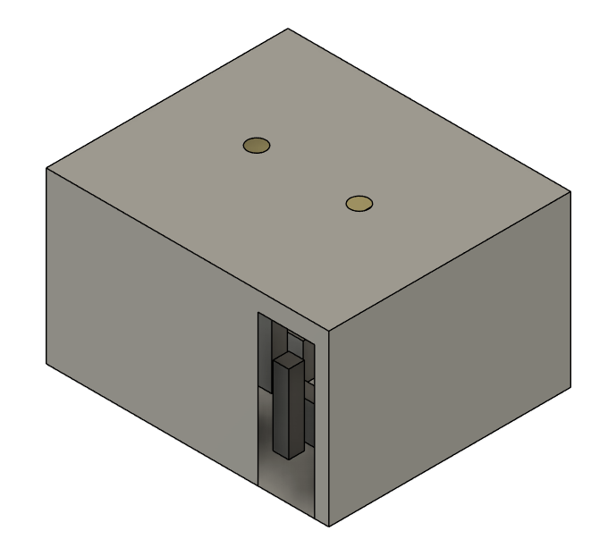
Model of the outside of the classroom, with walls, inlet and outlet vents, and a door.
The model is set up to simulate COVID-19 particles as a discrete particle phase with custom sizes that are advected by a continuous phase, which is the airflow in the room. The particles are liquid water and considered inert, so they will not change phase during the simulation. The k-omega turbulence model with default parameters was used to simulate viscous effects throughout the fluid.
Boundary conditions were specified for the continuous phase airflow, the dispersed COVID particles, and the surrounding walls of the fluid domain.
| Boundary Location | Phase / Domain | Type / Condition | Key Parameters & Values |
|---|---|---|---|
| Air Vent Inlet | Continuous Phase | Velocity Inlet |
• Fluid: Air • Velocity Rate: 0.05 m/s (normal to surface) • Gauge Pressure: 0 Pa • Turbulent Intensity: 5% • Turbulent Viscosity Ratio: 10 |
| Discrete Phase | Escape | Allows particles to exit domain if physics dictate. | |
| Air Vent Outlet / Door Outlet | Continuous Phase | Pressure Outlet |
• Gauge Pressure: 0 Pa • Backflow Direction: Normal to boundary • Backflow Pressure Spec: Absolute pressure • Turbulent Intensity: 5% • Turbulent Viscosity Ratio: 10 |
| Discrete Phase | Escape | Allows flow and particles to freely escape at ambient atmospheric pressure. | |
| Sick Mouth Inlet | Continuous Phase | Velocity Inlet |
• Fluid: Air • Velocity Rate: 0.185 m/s (normal to surface) • Gauge Pressure: 0 Pa • Turbulent Intensity: 5% • Turbulent Viscosity Ratio: 10 |
| Discrete Phase | Escape | Particles escape boundary (particles are advected away by breathing). | |
| Classroom Walls | Continuous Phase | Stationary Wall |
• Fluid: Air • Shear Condition: No-slip • Roughness Model: Standard |
| Discrete Phase | Trap | COVID particles stick upon contact with the wall. | |
| Interior Room | Domain | Solid | Standard interior region setup. |
The model and parameters defined below represent the baseline case of the simulation. Other parameter studies build off this baseline case by varying one or more parameters, with all unique studies starting from this same baseline setup. Following is general setup information:
- Airflow is considered incompressible, so the energy equation is not utilized. Gravity is imposed at 9.81 m/s² downward through the classroom (same direction as inlet airflow). Radiation is not considered.
- Viscous & Cell Zone Conditions: SST k-omega turbulence model is used for viscous considerations with default values. The interior room is set to a fluid cell zone condition.
- Continuous Phase (Air): Modeled as standard air with a constant density of 1.225 kg/m³ and a constant viscosity of 1.7894(10⁻⁵) kg/(m·s).
- Discrete Phase Model (DPM - COVID-19 Particles):
- COVID-19 particles are treated separately from surrounding airflow, interacting such that airflow advects particles, but particles do not affect airflow.
- DPM phase updates every 10 iterations of the continuous phase.
- Particles are dispersed continuously normal to the mouth of the sick person at breathing velocity, considered inert with no phase changes.
- Modeled as liquid water droplets with a uniform diameter of 1 micron (Abuhegazy et al. 2020), utilizing a spherical momentum exchange drag law and discrete random walk turbulent diffusion with default constants.
- Simulations run at steady state (except for specific transient studies).
- Convergence criteria set to 10⁻³ for continuity, x-, y-, and z-velocity, k, and omega.
- Custom convergence criteria: If mass flow out of the primary outlet air vent reaches a change of 10⁻³ or less, the simulation terminates.
- Simulations run to 400 iterations or until convergence criteria are met.
Solver & Convergence Criteria:
A grid refinement study was conducted to ensure mesh independence.
| Parameters | Level 1 | Level 2 | Level 3 | Level 4 |
|---|---|---|---|---|
| Mesh Metrics | ||||
| Number of Cells | 12,106 | 20,324 | 83,087 | 313,786 |
| Minimum Orthogonality | 0.2218 | 0.2001 | 0.1703 | 0.1155 |
| Maximum Skewness | 0.5309 | 0.5282 | 0.6983 | 0.6839 |
| Local Sizing Size | 40 mm | 20 mm | 10 mm | 5 mm |
| Surface Mesh Min./Max. | 16 mm / 1048 mm | 8 mm / 512 mm | 4 mm / 256 mm | 2 mm / 128 mm |
| Number of Boundary Layers | 1 | 2 | 3 | 6 |
| Volume Mesh Maximum | 512 mm | 256 mm | 100 mm | 64 mm |
| Solution Results | ||||
| Outlet Mass Flow Rate | -0.0047200 kg/s | -0.0048300 kg/s | -0.0048574 kg/s | -0.0048645 kg/s |
| Runtime | 78 s | 91 s | 331 s | 1,429 s |
{kind=link}
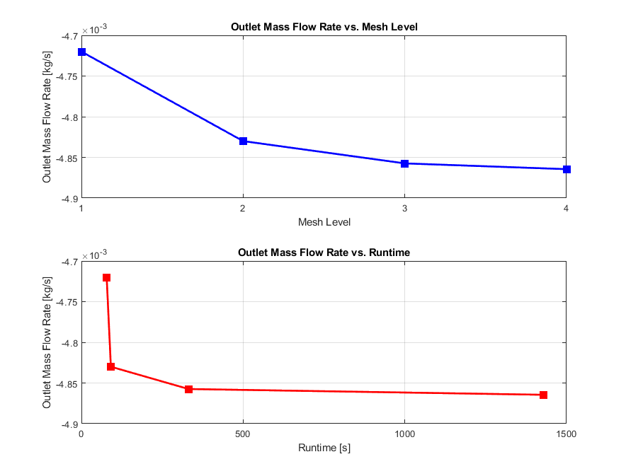
A figure displaying the results of the grid refinement study. It was decided that level 3 was sufficient for our simulations.
Ansys Fluent: Particle Tracking Results
To explore the effect of changes in ACH, a baseline steady-state case was produced for comparison; this case was the level three mesh with the previous parameter setup. To establish a frame of how results are visualized, the first simulation ran the baseline case at 1 ACH.
{kind=link}
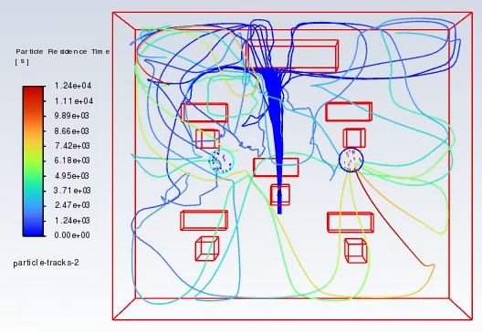
Steady-state results of DPM tracking for the 1 ACH case. The particles were expelled out of the sick person's mouth and tracked until steady state was reached or the particle left the domain, which is only possible through the top outlet vent.
In order to investigate the effect of increased flow rate into the system compared to the baseline case, the ACH was doubled, with all other parameters held constant. Another test ran with 3 ACH and then all simulations were repeated with the door open to allow for hopefully more escaped particles.
{kind=link}
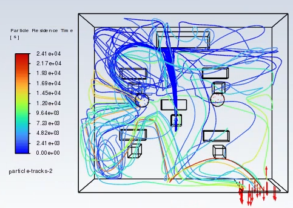
Steady-state results of DPM tracking for the 2 ACH case, and with the door open. It is clear that so e particles are escaping through the door, but many remain inside the classroom.
{kind=link}
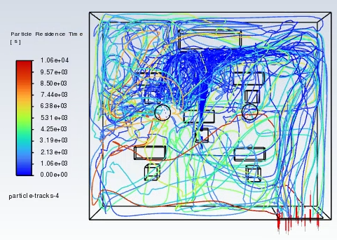
Steady-state results of DPM tracking for the 3 ACH case, and with the door open. The amount of particles is getting more drastic, but more are leaving through the door.
The results of the steady-state simulations are given below, showing how changes in ACH and door status affect the percentage of DPM particles are removed (efficiency)
{kind=link}
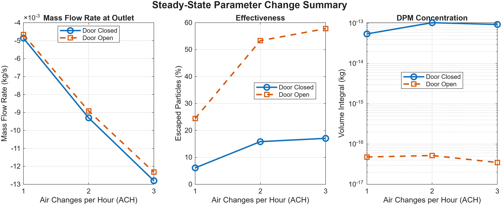
Steady-state results of DPM tracking for all cases.
For the steady state parameter study, increasing ACH correlated with an increase in escaped particles. When increased to 2 ACH for the closed door case, the ventilation effectiveness doubled. The recirculation zones generally got more packed over the ACH increase, with the largest vortices occurring near the air vent inlet. Compared to the closed door cases, all the open door simulations predictably improved ventilation effectiveness and DPM concentration within the room. The highest percent effectiveness achieved was 57.78% with a DPM concentration of 3.48(10-17) kg for the 3 ACH open door case.
To investigate how the cough particles disperse initially, transient simulations were run. At first, parameters were kept constant as in the baseline case, with particles tracked as points. As with the baseline case, 82 particles were tracked with 1 ACH. Due to computational and time constraints, the transient simulation was modeled for 100-300 s periods, with a cough/sneeze velocity of 0.185 m/s.
{kind=link}
{kind=link}
{kind=link}
{kind=link}
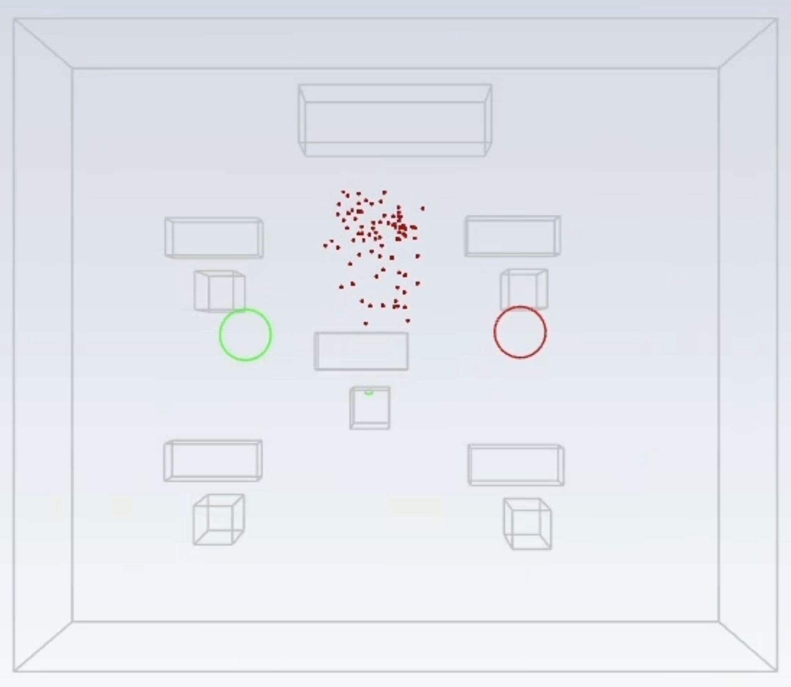
(d) t = 80 s
{kind=link}
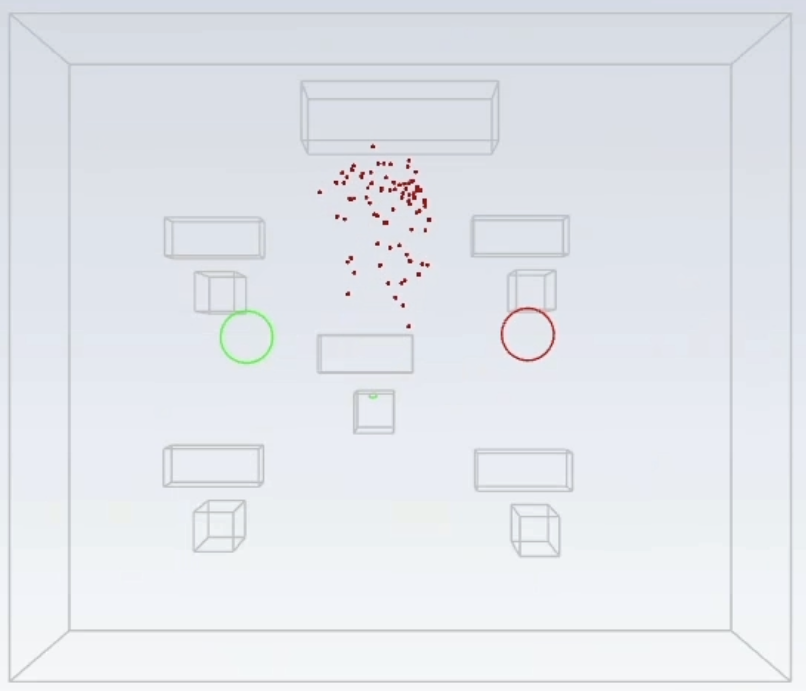
(e) t = 100 s
The transient simulations show that the particles are advected by breathing, they do not spread rapidly in this scenario, but they would be very problematic for close contact. The next simulation shows DPM spreading for a 10m/s uncovered cough.
{kind=link}
{kind=link}
{kind=link}
{kind=link}
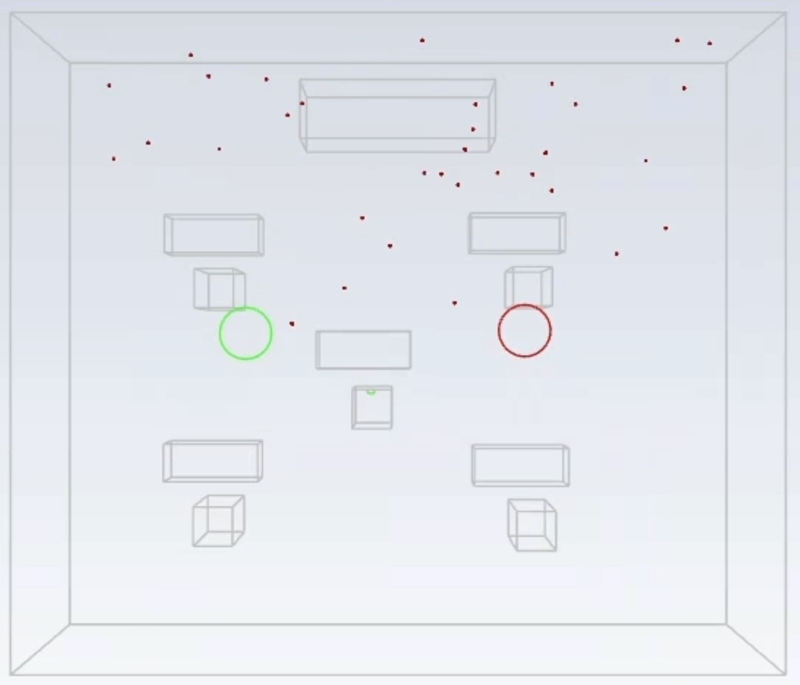
(d) t = 30 s
{kind=link}
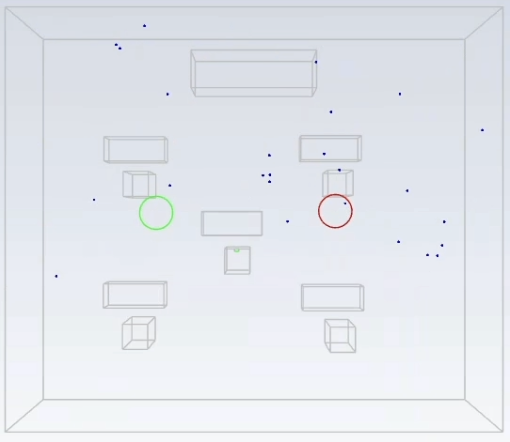
(e) t = 60 s
The transient simulations show that the particles released from a large cough will rapidly spread away from the sick individual and surround the entire room relatively quickly. The following results show the exit mass flow rate and the DPM integrated concentration with varying ACH, DPM distribution type (breathing vs. cough), and runtime.
| Parameter Change | Mass Flow Rate at Outlet (kg/s) | Volume-Integral of DPM Concentration (kg) |
|---|---|---|
| 1 ACH, 0.185 m/s cough, run to 100 s | 0.0049 | 4.70(10⁻⁷) |
| 2 ACH, 0.185 m/s cough, run to 100 s | 0.0093 | 4.82(10⁻⁷) |
| 3 ACH, 0.185 m/s cough, run to 100 s | 0.0138 | 4.57(10⁻⁷) |
| 1 ACH, 0.185 m/s cough, run to 300 s | 0.0049 | 8.90(10⁻⁷) |
| 3 ACH, 0.185 m/s cough, run to 300 s | 0.0138 | 9.14(10⁻⁷) |
In the closed door steady state parameter study it was clear that increasing ACH also increased ventilation effectiveness. However, results suggested that increasing the ACH rate beyond 3 did not produce much difference in effectiveness. Opening the door clearly allowed for easier escape of the COVID particles from the room. Also, by placing an outlet on the edge that was almost the full height of the domain, vertically dispersed particles were more likely to escape. It was difficult to use the transient (door closed) results to evaluate the effectiveness of increased ACH with respect to improving particle ejection from the room. However, visualization of the particle cloud was useful to infer how ACH affects particle distribution and recirculation. Overall, the results of this study suggested that increasing the number and area of outlets were most effective at particle ejection, with changes to ACH and adding inlet vents less so. Increasing the flow rate dispersed the particles further and more quickly, which was beneficial with the presence of the open door. These recommendations could be used to address safety concerns for future airborne viral illnesses.
Ansys Certifications
Through my CFD course at UCSD, I was given the opportunity to obtain Ansys certifications. I completed five certifications in the summer after the course and was retroactively awarded another later. The certifications are as follows:
Ansys Professional
- Getting Started with Ansys Fluent (July 2025)
Ansys Associate
- Foundations in Fluid Dynamics using Ansys Fluent (July 2025)
- Fundamentals of Compressible Flows (July 2025)
- Foundations of Heat Transfer using Ansys Mechanical (August 2025)
- Foundations of Stress Analysis using Ansys Mechanical (July 2025)
- Heat Transfer for Structures (July 2025)
The certifications tested by knowledge on fluid dynamics and mechanics theory, as well as applications in Ansys Fluent and Mechanical. In Ansys Fluent I found drag coefficients, drag forces, velocity contours, and pressure coefficients for external flow around a sphere. I also found lift and drag coefficients for an airfoil, created pressure contours, and analyzed turbulent kinetic energy. The certifications also tested creating mesh geometry and ensuring proper quality and runtime was maintained. In Ansys Mechanical, I found normal elastic stresses and strains, shear stresses and strains, directional deformation, and thermal strains.
{kind=link}
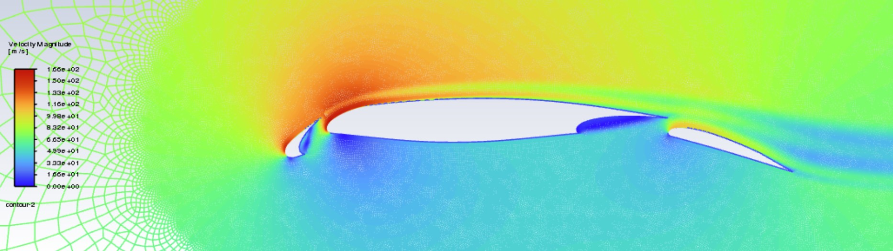
Velocity magnitude contours on an airfoil.
Conclusion
In conclusion, I have gained experience both developing my own CFD solvers in MATLAB and applying an industry-standard product like Ansys Fluent to a real-world problem. I have a strong fundamental understanding for how CFD solvers work, and the problems that occur when developing them and using them. I also have shown my ability to visualize CFD solutions, key variable fields, grid refinements, and other deliverables.
Contact & Resume
- Resume: View / Download Resume (PDF)
- LinkedIn: LinkedIn Profile
- Email: icosgrove010@gmail.com
- GitHub: GitHub Profile